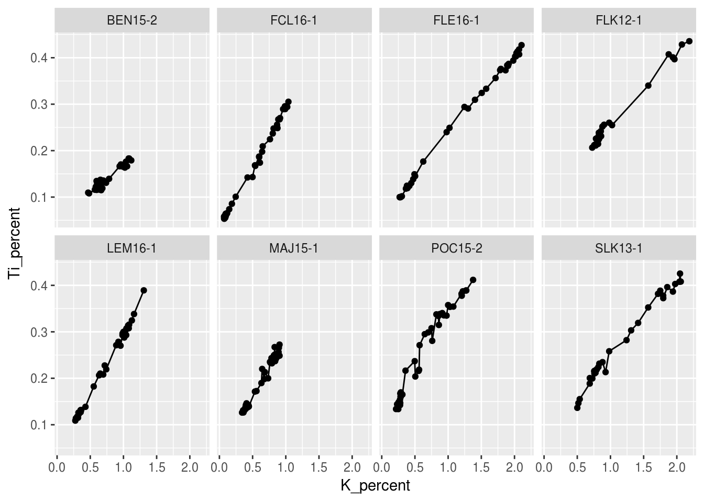

Tutorial 6 Computing statistics in R
Intro
6.1 Prerequisites
The prerequisites for this tutorial are the tidyverse and broom packages. If these packages aren’t installed, you’ll have to install them using install.packages().
install.packages("tidyverse") # will also install the broom packageLoad the packages when you’re done! If there are errors, you may have not installed the above packages correctly!
library(tidyverse)
library(rclimateca)
library(broom)Finally, you will need to obtain the sample data…
climate_data <- getClimateData(c(27141, 6354), year = 2000:2003,
nicenames = TRUE) %>%
left_join(ecclimatelocs %>% select(station_name = Name, stationid = `Station ID`),
by = "stationid") %>%
select(station_name, year, month, everything()) %>%
select(-ends_with("flag"), -parseddate, -datetime, -stationid)## getClimateData() is deprecated and will be removed in future versions: use ec_climate_data() instead## getClimateDataRaw() is deprecated and will be removed in future versions: use ec_climate_data_base() instead
## getClimateDataRaw() is deprecated and will be removed in future versions: use ec_climate_data_base() instead6.2 Terminology
6.2.1 Grouping Variables
Many statistical test functions in R use a formula to specify a value column and a grouping column for a test using a data frame as input. This is usually a column that contains data labels like “group1”, “group1”, “group1”, “group2”, “group2”, etc., whose values divide observations into groups for which we want to test significance. In our sample data frame climate_data, these variables are station_name, year, month. The other variables represent measured values, whereas the grouping variables give context to each row. The formula used as input to statistical test functions is generally in the form measure_var ~ grouping_var, where measure_var and grouping_var are columns in a data frame.
Sometimes it is necessary to use column names as grouping variables. In the case of the climate_data data frame, one might want to test whether the mean monthly temperature (meantemp) is significantly different than the extreme maximum monthly temperature (extrmaxtemp). Because these values are stored in two columns, there is no grouping variable that can separate these two sets of observations. This operation is possible using the gather() function.
climate_data_mean_max_temp <- climate_data %>%
select(station_name, year, month, meantemp, extrmaxtemp) %>%
gather(meantemp, extrmaxtemp, key = "temperature_type", value = "temp")
climate_data_mean_max_temp## # A tibble: 192 x 5
## station_name year month temperature_type temp
## <chr> <int> <int> <chr> <dbl>
## 1 KENTVILLE CDA CS 2000 1 meantemp - 4.20
## 2 KENTVILLE CDA CS 2000 2 meantemp - 2.60
## 3 KENTVILLE CDA CS 2000 3 meantemp 1.60
## 4 KENTVILLE CDA CS 2000 4 meantemp 6.40
## 5 KENTVILLE CDA CS 2000 5 meantemp 10.0
## 6 KENTVILLE CDA CS 2000 6 meantemp 16.4
## 7 KENTVILLE CDA CS 2000 7 meantemp 18.8
## 8 KENTVILLE CDA CS 2000 8 meantemp 19.2
## 9 KENTVILLE CDA CS 2000 9 meantemp 14.6
## 10 KENTVILLE CDA CS 2000 10 meantemp 9.90
## # ... with 182 more rowsIn the resulting data frame, the temperature_type column will contain the values “meantemp” and “extrmaxtemp”, which can be used as a grouping variable in a statistical test function. When using gather(), it is important to select only the relevant variables using select() first.
6.2.2 Paired Values
Some statistical tests are only possible or are preferable with paired values, or values that are stored in two columns in a data frame (i.e., part of the same observation). The example above of testing whether the mean monthly temperature (meantemp) is significantly different than the extreme maximum monthly temperature (extrmaxtemp) could also be done pairwise, in which case the original data is already in the correct format for the test. Sometimes the data is provided in a form where there is a grouping variable, and measured values are in the same column (this is the result of the above example where we converted meantemp and extrmaxtemp into a grouping variable and a measured variable). We can transform a grouping variable and a measured variable into paired observations using the spread() function.
climate_data_mean_max_temp %>%
spread(key = temperature_type, value = temp)## # A tibble: 96 x 5
## station_name year month extrmaxtemp meantemp
## * <chr> <int> <int> <dbl> <dbl>
## 1 GREENWOOD A 2000 1 18.0 - 4.40
## 2 GREENWOOD A 2000 2 17.8 - 3.10
## 3 GREENWOOD A 2000 3 17.9 2.00
## 4 GREENWOOD A 2000 4 20.0 6.40
## 5 GREENWOOD A 2000 5 21.3 10.4
## 6 GREENWOOD A 2000 6 31.8 16.2
## 7 GREENWOOD A 2000 7 29.4 19.0
## 8 GREENWOOD A 2000 8 29.0 18.8
## 9 GREENWOOD A 2000 9 31.0 14.1
## 10 GREENWOOD A 2000 10 21.9 9.20
## # ... with 86 more rowsIn the resulting data frame, the values that were in temperature_type are now column names, and the qualifying variables station_name, year, and month are used to identify unique observations that are paired with one another.
6.2.3 Independent Observations
…don’t have a good explanation for this.
6.2.4 Graphical Test
autocorrelation?
6.3 Testing for Normality
Some tests (notably the t-test, the ANOVA test, and the Pearson coefficient) require that the input values are normally distributed. For small amounts of replicate samples, this is generally a good assumption, however larger samples whose distribution cannot be assumed require a test for normality. One such test is the Shapiro-Wilk test, which is described below.
6.3.1 Test Data
The test for normality requires a data frame with one column that contains the values that should be normally distributed. In our example, we will test whether or not mean monthly temperature is normally distributed, and whether or not total montly precipitation is normally distributed. It is also good practice to keep qualifying variables that give context to each observation.
normal_test_data <- climate_data %>%
select(station_name, year, month, meantemp, totalprecip)
normal_test_data## # A tibble: 96 x 5
## station_name year month meantemp totalprecip
## <chr> <int> <int> <dbl> <dbl>
## 1 KENTVILLE CDA CS 2000 1 - 4.20 182
## 2 KENTVILLE CDA CS 2000 2 - 2.60 10.7
## 3 KENTVILLE CDA CS 2000 3 1.60 116
## 4 KENTVILLE CDA CS 2000 4 6.40 89.1
## 5 KENTVILLE CDA CS 2000 5 10.0 58.0
## 6 KENTVILLE CDA CS 2000 6 16.4 46.0
## 7 KENTVILLE CDA CS 2000 7 18.8 72.4
## 8 KENTVILLE CDA CS 2000 8 19.2 36.6
## 9 KENTVILLE CDA CS 2000 9 14.6 58.4
## 10 KENTVILLE CDA CS 2000 10 9.90 198
## # ... with 86 more rows6.3.2 Graphical Test
The graphical test for a normality test is a histogram.
ggplot(normal_test_data, aes(x = meantemp)) +
geom_histogram(bins = 30)## Warning: Removed 1 rows containing non-finite values (stat_bin).
A historgram of a normally distributed variable should be symmetrical about its mean, like the histogram shown below:
set.seed(300)
normal_random_data <- tibble(normal_random_data = rnorm(n = 100, mean = 0, sd = 1))
ggplot(normal_random_data, aes(x = normal_random_data)) +
geom_histogram(bins = 30)
A histogram of a normally distributed variable generally isn’t a perfect bell curve (especially when there are few data points), but should show some evidence of symmetry about the mean value.
6.3.3 Statistical Test
Testing for normality in R involves a call to shapiro.test(), followed by a call to tidy() in the broom package to view the results in the form of a data frame.
shapiro.test(normal_test_data$meantemp) %>%
tidy()## # A tibble: 1 x 3
## statistic p.value method
## <dbl> <dbl> <fct>
## 1 0.936 0.000163 Shapiro-Wilk normality testA low p.value indicates that there is evidence to reject the notion that the input data are sampled from a normally distributed population. You will have to pick a level of significance (\(\alpha\)) as a threshold, usually 0.05 or 0.01, under which the p-value will indicate the sample was drawn from a non-normal distribution. In our example, the mean montly temperature was shown to be non-normally distributed (p<0.001).
In the case of our normal random data, the p-value is quite high (p=0.72), suggesting that the data were sampled from a normally distributed population.
shapiro.test(normal_random_data$normal_random_data) %>%
tidy()## # A tibble: 1 x 3
## statistic p.value method
## <dbl> <dbl> <fct>
## 1 0.991 0.722 Shapiro-Wilk normality test6.4 Correlation and Linear Regression
Tests for correlation of two variables test whether or not a relationship exists between the two variables (i.e., can any of the variance of one variable be explained by variance in the other). This is often done to test association between two parameters when these measurements are paired. In our example, we will test the corellation between mean monthly temperature and total monthly precipitation, to ascertain whether or not a statistically significant relationship exists between the two.
6.4.1 Test Data
Correlation tests all require a data frame with one column for the x variable and one column for the y variable. It is often useful to keep other qualifying variables that give context to each observation, but are not required by the test. In our case, the x variable will be meantemp and the y variable will be totalprecip.
correlation_test_data <- climate_data %>%
select(station_name, year, month, meantemp, totalprecip)
correlation_test_data## # A tibble: 96 x 5
## station_name year month meantemp totalprecip
## <chr> <int> <int> <dbl> <dbl>
## 1 KENTVILLE CDA CS 2000 1 - 4.20 182
## 2 KENTVILLE CDA CS 2000 2 - 2.60 10.7
## 3 KENTVILLE CDA CS 2000 3 1.60 116
## 4 KENTVILLE CDA CS 2000 4 6.40 89.1
## 5 KENTVILLE CDA CS 2000 5 10.0 58.0
## 6 KENTVILLE CDA CS 2000 6 16.4 46.0
## 7 KENTVILLE CDA CS 2000 7 18.8 72.4
## 8 KENTVILLE CDA CS 2000 8 19.2 36.6
## 9 KENTVILLE CDA CS 2000 9 14.6 58.4
## 10 KENTVILLE CDA CS 2000 10 9.90 198
## # ... with 86 more rows6.4.2 Graphical Test
A graphical test of the correlation of two variables is a biplot with one variable on the x-axis, and one variable on the y-axis. The variable on the x-axis should be the indepenent variable for the purposes of the test. This will look something like ggplot(my_data_frame, x = independent_var, y = dependent_var) followed by geom_point(). You can add a linear regression to the plot using stat_smooth(method = lm). This will add the best-fit line whose slope and intercept we will calculate in the next section.
ggplot(correlation_test_data, aes(x = meantemp, y = totalprecip)) +
geom_point() +
stat_smooth(method = lm)## Warning: Removed 2 rows containing non-finite values (stat_smooth).## Warning: Removed 2 rows containing missing values (geom_point).Based on inspection of the biplot, you should be able to have a hunch as to whether or not a linear relationship exists between the two variables. In our case, it looks like there is a weak negative correlation between mean temperature and total preciptiation (i.e., the higher the mean temperature for a given month, the lower the total precipitation for the same month).
6.4.3 The Pearson product-moment correlation coefficient (r)
The Pearson product-moment correlation coefficient (usually known as the r value) is a test of how well a line of best fit is able to model the data (generally a standard least-squares linear regression). The coefficient ranges from -1 (perfect negative linear relationship) to +1 (perfect positive linear relationship). Generally the square of this value is reported (r2), and can be interpreted as “xx % of the variance in y_variable can be explained by the variance in x_variable”. There is no statistical way to test how good the linear relationship is, but it is possible to test that the coefficient is not equal to zero (i.e., it is possible to reject the notion that there x_variable and y_variable have no linear relationship).
6.4.3.1 Assumptions
The Pearson product-moment correlation coefficient assumes that x_variable and y_variable are normally distributed.
6.4.3.2 Statistical Test
Calculating the r value and associated p-value involves a call to cor.test() with method = "pearson", followed by a call to tidy() in the broom package to get the test results in the form of a data frame.
cor.test(~totalprecip + meantemp, data = correlation_test_data,
method = "pearson") %>%
tidy()## # A tibble: 1 x 8
## estimate statistic p.value parameter conf.low conf.high method
## <dbl> <dbl> <dbl> <int> <dbl> <dbl> <fct>
## 1 -0.304 -3.07 0.00286 92 -0.478 -0.108 Pearson's produ…
## # ... with 1 more variable: alternative <fct>The estimate column contains the r value, which you could square to get the r2 value. The p.value column contains the p-value, which represents the probability that the two variables have no linear relationship. In our case, totalprecip and meantemp have a significant negative linear relationship (p=0.003).
6.4.4 Spearman \(\rho\) or rs
The Spearman correlation coefficient (abbreviated \(\rho\) or rs) is a test of a one-to-one relationship between x_variable and y_variable, not necessarily linear. The test uses ranked values for x_variable and y_variable, so outliers are less of an issue than they are with the Pearson coefficient. Similar to the Perason coefficient, the rs value varies from -1 (a perfect one-to-one negative relationship) to 1 (a perfect one-to-one positive relationship). Similar to the Pearson coefficient, it is only possible to test that the value is not equal to zero (i.e., i.e., it is possible to reject the notion that there x_variable and y_variable have no one-to-one relationship).
6.4.4.1 Assumptions
The Spearman correlation coefficient does not make any assumptions about the distribution of x_variable or y_variable.
6.4.4.2 Statistical Test
Calculating the rs value and associated p-value involves a call to cor.test() with method = "spearman", followed by a call to tidy() in the broom package to get the test results in the form of a data frame.
cor.test(~totalprecip + meantemp, data = correlation_test_data,
method = "spearman") %>%
tidy()## Warning in cor.test.default(x = c(182.2, 10.7, 116.4, 89.1, 58, 46, 72.4, :
## Cannot compute exact p-value with ties## # A tibble: 1 x 5
## estimate statistic p.value method alternative
## <dbl> <dbl> <dbl> <fct> <fct>
## 1 -0.381 191102 0.000154 Spearman's rank correlation rho two.sidedThe estimate column contains the rs value, and the p.value column contains the p-value, which represents the probability that the two variables are not correlated. In our case, totalprecip and meantemp have a significant negative relationship (p<0.001).
6.4.5 Linear Regression
Whereas a Pearson coefficient is meant to assess the quality of a linear relationship, linear regression is meant to determine the slope and intercept of that relationship in the form \(y = mx + b\), where \(y\) is y_variable, and x is x_variable. By obtaining \(m\) and \(b\), we can use x_variable to calculate y_variable for any value of x_variable.
6.4.5.1 Assumptions
The standard linear regression (a least-squares regression) works best if both x_variable and y_variable are symmetrically distributed.
6.4.5.2 Statistical Test
Calculating the coefficients \(m\) and \(b\) for a linear regression involves a call to lm() with a formula y_variable ~ x_variable (note this is slightly different than for correlation testing) and data = my_data_frame. For our example, the call would look like this:
lm(totalprecip ~ meantemp, data = correlation_test_data) %>%
tidy()## # A tibble: 2 x 5
## term estimate std.error statistic p.value
## <chr> <dbl> <dbl> <dbl> <dbl>
## 1 (Intercept) 101 5.45 18.5 8.13e⁻³³
## 2 meantemp - 1.44 0.469 - 3.07 2.86e⁻ ³The term column in the ouput refers to the name of the input column in the righthand side of the input formula, or “(Intercept)” for the intercept, and the estimate column refers to the coefficient itself. In the example, this means we can predict totalprecip using the (approximate) expression -1.44 * meantemp + 101.08.
In practice, we want to use the predict() function to do this math for us (because if we change some code above that alters which observations are used to create the regression, it will change the coefficient and intercept, and any code that relies on the hard-coded version will be incorrect). This is a three step process: first, save the result of lm() to a variable, then create a data frame with a column that has the same name as x_variable, then use mutate() to create a new column with the predictions from predict(). Note that we use a special trick in mutate() to pass the entire data frame to the newdata argument of predict() (the . represents the whole data frame as opposed to any particular column, which we can refer to by name within mutate()). For our example, we might be interested in the predicted total monthly precipitation values when the mean monthly temperature is 5, 10, 15, and 20 degrees.
model <- lm(totalprecip ~ meantemp, data = climate_data)
tibble(meantemp = c(5, 10, 15, 20)) %>%
mutate(totalprecip_predicted = predict(model, newdata = .))## # A tibble: 4 x 2
## meantemp totalprecip_predicted
## <dbl> <dbl>
## 1 5.00 93.9
## 2 10.0 86.7
## 3 15.0 79.5
## 4 20.0 72.36.5 Significant differences
Tests for significant differences tests whether or not there is a significant difference among various groups of observations. Which test to use depends on whether or not the data are normally distributed, and how many groups exist. For our example, we will be looking at the diferences in mean temperature (meantemp) as grouped by several grouping variables (station_name, year, and month).
6.5.1 Test Data
Tests for significant differences require a data frame with a column containing the values to test, and a column containing the variable to group by (usually contains strings like “group1”, “group2”, “group3”, etc.). It is often useful to keep other qualifying variables that give context to each observation, but are not required by the test. In our case, the column in climate_data that contains the values we are testing is meantemp, and the columns that contain the groups are station_name, year, and month.
difference_test_data <- climate_data %>%
select(station_name, year, month, meantemp)
difference_test_data## # A tibble: 96 x 4
## station_name year month meantemp
## <chr> <int> <int> <dbl>
## 1 KENTVILLE CDA CS 2000 1 - 4.20
## 2 KENTVILLE CDA CS 2000 2 - 2.60
## 3 KENTVILLE CDA CS 2000 3 1.60
## 4 KENTVILLE CDA CS 2000 4 6.40
## 5 KENTVILLE CDA CS 2000 5 10.0
## 6 KENTVILLE CDA CS 2000 6 16.4
## 7 KENTVILLE CDA CS 2000 7 18.8
## 8 KENTVILLE CDA CS 2000 8 19.2
## 9 KENTVILLE CDA CS 2000 9 14.6
## 10 KENTVILLE CDA CS 2000 10 9.90
## # ... with 86 more rows6.5.2 Graphical Test
The graphic for significant difference tests is a plot with the grouping variable on the x-axis, and the value variable on the y-axis. This is generated using something like ggplot(my_data_frame, aes(x = group_column, y = value_column)) followed by geom_point() and/or geom_boxplot(). If the grouping variable is station_name, such a plot might look like this:
ggplot(difference_test_data, aes(x = station_name, y = meantemp)) +
geom_boxplot()## Warning: Removed 1 rows containing non-finite values (stat_boxplot).For smaller numbers of observations, it may make sense to plot the values of the observations themselves using geom_point(). In the next example, the grouping variable is month (note that we have to use factor(month) in ggplot, because we are using a continuous variable as a grouping variable).
ggplot(difference_test_data, aes(x = factor(month), y = meantemp)) +
geom_point()## Warning: Removed 1 rows containing missing values (geom_point).When there are a small number of observations in each group, it also may make sense to compute summary statistics and plot those instead of a boxplot or the observations themselves. This is done using stat_summary(), which by default displays a point with error bars plus or minus the standard error (the standard deviation divided by the square root of n).
ggplot(difference_test_data, aes(x = factor(month), y = meantemp)) +
stat_summary(size = 0.25)## Warning: Removed 1 rows containing non-finite values (stat_summary).## No summary function supplied, defaulting to `mean_se()
Based on the graphic, you should be able to have a hunch as to whether or not one group of observations is significantly different than another group of observations (when grouped by station, it looks like there isn’t much difference in temperature, but when grouped by month, there is a clear difference). This is important, because it will make interpreting your results more intuitive and allows you to check for errors.
6.5.3 The t-test
The t-test tests whether or not there is a significant difference between a value exactly two groups of observations (an ANOVA test can be used when there are more than two groups). We will be using this test to ascertain whether or not there is a significant difference in temperature when these observations are grouped by station (note that there are exactly two stations, Kentville and Greenwood).
6.5.3.1 Assumptions
The t-test assumes that the two samples of data values are normally distributed and independent.
6.5.3.2 Statistical Test
Performing the t-test uses a call to the t.test() function in the form t.test(value_column ~ group_column, data = my_data_frame), and a call to the tidy() function in the broom package to view the results in the form of a data frame. In the case of the Kentville/Greenwood climate data, the two tests look like this:
t.test(meantemp ~ station_name, data = difference_test_data) %>% tidy()## # A tibble: 1 x 10
## estimate estimate1 estimate2 statistic p.value parameter conf.low
## <dbl> <dbl> <dbl> <dbl> <dbl> <dbl> <dbl>
## 1 0.0641 7.49 7.42 0.0347 0.972 92.9 -3.60
## # ... with 3 more variables: conf.high <dbl>, method <fct>,
## # alternative <fct>Here the estimate column is the estimated difference between the means of the two groups, and the p.value column is the p-value, which represents the probability that there is no significant difference between the two groups (p=0.97).
6.5.4 Paired t-test
Paired version of the t-test…
6.5.5 Wilcox Rank Sum/Mann-Whitney Test
The Wilcox Rank Sum Test is…
6.5.6 The ANOVA test
The ANOVA test tests whether or not there is a significant difference between a value using two or more groups of observations (an ANOVA test when there are only two groups is identical to a t-test). We will be using this test to ascertain whether or not there is a significant difference in mean monthly temperature when these observations are grouped by (1) year and (2) month.
6.5.6.1 Assumptions
The ANOVA test assumes all samples of data values are normally distributed and independent.
6.5.6.2 Statistical Test
Performing the ANOVA test uses a call to the aov() function in the form aov(value_column ~ group_column, data = my_data_frame), and a call to the tidy() function in the broom package to view the results in the form of a data frame. In the case of the Kentville/Greenwood climate data, the two tests look like this:
aov(meantemp ~ year, data = difference_test_data) %>% tidy()## # A tibble: 2 x 6
## term df sumsq meansq statistic p.value
## <chr> <dbl> <dbl> <dbl> <dbl> <dbl>
## 1 year 1.00 3.48 3.48 0.0430 0.836
## 2 Residuals 93.0 7533 81.0 NA NAaov(meantemp ~ month, data = difference_test_data) %>% tidy()## # A tibble: 2 x 6
## term df sumsq meansq statistic p.value
## <chr> <dbl> <dbl> <dbl> <dbl> <dbl>
## 1 month 1.00 1058 1058 15.2 0.000184
## 2 Residuals 93.0 6478 69.7 NA NAGenerally, the only column we care about in the output is the p.value, which is the probability that none of the groups of values are significantly different than any others. In the case of the Kentville/Greenwood climate data, there is a significant difference in temperature among months (p<0.001), but no significant different in temperature among years (p=0.83).
6.5.7 Krustal-Wallis Rank Sum Test
Krustal Wallis Test…
6.6 Summary
Tutorial summary
Grolemund, Garrett, and Hadley Wickham. 2017. R for Data Science. New York: O’Reily. http://r4ds.had.co.nz/.